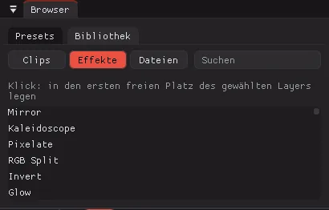

Inhalt
Erste Schritte
- Willkommen bei NyrexVJ
- Installation und erster Start
- Das Fenster im Überblick
- Deine erste Show in fünf Minuten
Visuals spielen
- Das Clip-Raster
- Decks und Übergänge
- Layer und Mischmodi
- Das Clip-Fenster
- Effekte
- Die Bibliothek
- Presets und Sitzungen
- Das Master-Fenster
Musik und Bewegung
Eigene Inhalte
- Video- und Bild-Clips
- Deine eigenen Shader
- 3D-Modelle
- Der Clip Creator
- Text, Partikel und Effektketten
- Der Node-Effekt-Editor
- Live-Quellen: Spout, NDI und Kameras
Ausgabe und Aufnahme
Live-Steuerung und Shows
- Steuerung: MIDI, OSC und die Webseite
- Show-Sync und Timecode
- Die Show-Zeitleiste
- Bühne: DMX, VRSL und VRChat
- Plugins
Nachschlagen und Hilfe
Handbuch / Visuals spielen
Effekte
#Effekt-Slots
Jeder Layer hat vier Effekt-Slots, und der Master auch. Die Effekte laufen von Slot 1 bis Slot 4, die Reihenfolge ist also wichtig: Ein Blur vor einer Farbänderung sieht anders aus als eine Farbänderung vor einem Blur. Die Effekte eines Layers verändern nur diesen Layer, die Effekte des Masters verändern das fertige Bild.
Jeder Slot ist wie bei Resolume ein farbiges Band mit einem kleinen Dreieck, der Liste zur Wahl des Effekts (tipp in die Liste, um zu suchen), dem Knopf B und dem Knopf X. Das Dreieck klappt den Slot zu und auf, B überbrückt den Effekt (der Knopf leuchtet und die Regler werden grau) und X leert den Slot. Unter dem Band stehen bis zu vier Regler und eine Zeile für die Musikreaktion. Bei eingeschaltetem hohen Kontrast tritt das alte Häkchen an die Stelle von B und X. Ein Regler, den du bewegt hast, geht mit Rechtsklick auf seinen Standardwert zurück. Effekte, die dreidimensional zeichnen, tragen in der Liste die Markierung [3D].
#Effekte hinzufügen
- Öffne die Bibliothek, wechsel zu Effekte und klick einen Effekt an: Er kommt in den ersten freien Slot des gewählten Layers. Sind alle vier Slots belegt, sagt dir NyrexVJ das.
- Zieh einen Effekt aus der Bibliothek auf einen Slot, um ihn genau dort abzulegen.
- Klick mit rechts auf einen Effekt in der Bibliothek, um ihn zu einem gewählten Layer oder zum Master hinzuzufügen.
- Wähl einen Effekt aus der Liste im Slot selbst.


#Auf die Musik reagieren
Unter den Reglern eines Slots findest du eine Band-Liste, einen Modus und ein Ziel. Wähl Bass, Mitten, Höhen, Pegel oder Kick (oder ein Makro, einen LFO, Beat oder Bar) als Band. Dann bestimmst du, wie es wirkt:
- Parameter bewegt einen Wert des Effekts, den du als Ziel wählst, um die eingestellte Stärke.
- Gate zeigt den Effekt nur, solange das Band laut ist, und blendet ihn in der Stille aus. Der eingestellte Wert bestimmt, wie empfindlich das Gate ist.
Mit Gate baust du schnell ein Stroboskop oder einen Glitch, der nur auf den Beat trifft.
#Glas-Effekte
Zwei Effekte lassen das Bild aussehen, als sähe man es durch Glas. Prism Glass bricht das Bild in Prismenfacetten: Facetten bestimmt, wie viele es sind, Brechung, wie weit jede Facette das Bild ablenkt, Streuung, wie stark sich die Farben an der Kante trennen, und Glanz, wie hell die Kanten sind und wie stark sie im Beat aufblitzen. Frosted Glass verwischt das Bild wie Milchglas: Frost bestimmt die Unschärfe, Körnung fügt feine Körnung hinzu, Milchigkeit hellt das Bild auf und verschleiert es, und Beat-Puls lässt die Unschärfe mit jedem Beat anschwellen. Beide haben vier Regler von 0 bis 1 und stehen in der Bibliothek unter Effekte.
#Rückkopplungs-Effekte
Ein Rückkopplungs-Effekt merkt sich das Bild, das er einen Moment vorher gemacht hat, und mischt es in das nächste. So entstehen Schweife, Echos und Tunnel. Trails und Hue Feedback arbeiten schon immer so. Vier weitere Effekte sind neu, alle in der Bibliothek unter Effekte, alle mit vier Reglern von 0 bis 1:
- Time Echo lässt von allem, was sich bewegt hat, eine verblassende Kopie zurück. Halbwertszeit ist die Zeit, in der die Kopie auf die Hälfte verblasst (von 0,04 bis 3 Sekunden), Abstand und Winkel schieben die Kopie von ihrem Platz weg, und Weichheit verwischt sie ein wenig.
- Motion Smear mischt das Bild langsam zum neuen hin, sodass schnelle Bewegung verschmiert. Verschmieren ist die Halbwertszeit (0,01 bis 1,2 Sekunden), Schieben und Winkel bewegen das alte Bild zur Seite, und Detail lässt mehr vom scharfen Bild durch.
- Feedback Transform macht einen Tunnel. Halbwertszeit geht von 0,05 bis 4 Sekunden, Zoom lässt die Schweife über der Mitte wachsen und darunter schrumpfen, Drehen dreht sie, und Drift schiebt sie in eine Richtung, die sich langsam dreht. Ein Kick gibt einen kleinen Zoom dazu.
- Accumulate sammelt Licht über die Zeit. Belichtung ist das Zeitfenster (0,1 bis 10 Sekunden), Modus wählt die Art (das untere Drittel mittelt, das mittlere hält das Hellste, das obere belichtet: es baut sich wie eine lange Belichtung auf und kann Weiß erreichen), Verstärkung macht das Bild heller, bevor es gesammelt wird, und Kick-Leeren lässt einen Kick das Gesammelte wegwischen.
Die Halbwertszeiten sind echte Sekunden. Sie werden aus der Zeit zwischen zwei Bildern gerechnet, ein Schweif hält also bei 30, 60 oder 144 Bildern pro Sekunde gleich lang und bleibt stehen, solange die Show pausiert. Die alten Effekte Trails und Hue Feedback sind nicht verändert. Weil die Rückkopplungsbilder 8 Bit Farbe halten, kann ein langsames Trails ein paar Stufen über Schwarz stehen bleiben und ein schwaches Grau hinterlassen; die neuen Effekte runden zufällig, damit sie ganz bis Schwarz verblassen.
Einfrieren und Zurücksetzen. Hat eine Ebene oder der Master einen Rückkopplungs-Effekt, zeigt das Effektfeld Rückkopplung einfrieren und Rückkopplung zurücksetzen. Einfrieren hält jedes Rückkopplungsbild, wo es ist, während das Live-Bild weiter darübergezeichnet wird. Zurücksetzen löscht sie sofort. Einfrieren wird nicht mit der Show gespeichert und ist nach einem Neustart aus. Beides lässt sich auf MIDI und OSC legen (die Steuerungen Rückkopplung einfrieren und Rückkopplung zurücksetzen unter Master, IDs master/feedback-freeze und master/feedback-reset) und erscheint in der Weboberfläche. Einfrieren hält die Puffer von Shader-Clips und Shader-Filtern nicht fest; Zurücksetzen löscht auch diese.
Speicher. Jeder Rückkopplungs-Effekt hält ein Bild in der Größe seiner Ebene. Unter Einstellungen, Leistung, Rückkopplung siehst du, wie viele Puffer in Benutzung sind und wie viel Speicher sie brauchen. Das Rückkopplungs-Budget (zu Beginn 256 MB, 0 schaltet es ab, mindestens 64 MB) ist das Meiste, das sie zusammen verbrauchen dürfen. Ist es aufgebraucht, wird ein neuer Puffer kleiner angelegt (drei Viertel, die Hälfte, bis zu einem Viertel des Bildes) und der Effekt funktioniert weiter; passt selbst das nicht, zeigt der Effekt das Live-Bild ohne Schweife, bis wieder Speicher frei ist, und die Seite sagt, wie viele Puffer abgelehnt wurden. Eine Änderung des Budgets löscht die Rückkopplungsbilder einmal. Rückkopplungs-Puffer wiederverwenden hält einen freigegebenen Puffer ein paar Sekunden vor, damit das Aus- und Einschalten eines Effekts nicht jedes Mal neuen Speicher bei der Grafikkarte anfordert.
#Eigene Effekte
Neben den eingebauten Effekten gibt es Effekte, die du selbst baust oder installierst: Node-Effekte aus dem Node-Editor (angezeigt als Node: Name) und ISF-Filter aus deinem Shader-Ordner (angezeigt als ISF: Name). Sie funktionieren in den Slots wie jeder andere Effekt. Siehe Der Node-Effekt-Editor und Deine eigenen Shader. Um vier Effekte zusammenzuhalten, speichere sie als Kette, siehe Effektketten.
Fehler gefunden oder etwas vergessen? Sag es uns auf GitHub. Dasselbe Handbuch steckt im Programm, du hast es also auch ohne Internet. Öffne es mit F1 oder über das Menü Hilfe, Handbuch.